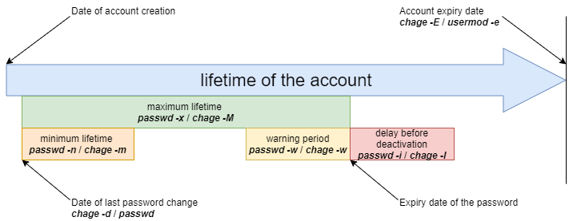

Gestione utenti
In questo capitolo imparerai come gestire gli utenti.
Generale
Ogni utente deve avere un gruppo, che è chiamato il gruppo primario dell'utente.
Diversi utenti possono far parte dello stesso gruppo.
Gruppo diversi dal gruppo primario sono chiamati gruppi supplementari.
Nota
Ogni utente ha un gruppo primario e può essere invitato in uno o più gruppi supplementari.
I gruppi e gli utenti sono gestiti dai loro identificatori numerici unici GID e UID.
UID: User IDentifier. ID utente unico.GID: Group IDentifier. Identificatore di gruppo unico.
Sia UID che GID sono riconosciuti dal kernel, il che significa che il Super Admin non è necessariamente l'utente root, purché l'utente uid=0 sia il Super Admin.
I file relativi agli utenti/gruppi sono:
- /etc/passwd
- /etc/shadow
- /etc/group
- /etc/gshadow
- /etc/skel/
- /etc/default/useradd
- /etc/login.defs
Pericolo
Dovresti sempre usare i comandi di amministrazione invece di modificare manualmente i file.
Gestione del gruppo
File modificati, righe aggiunte:
/etc/group/etc/gshadow
comando groupadd
Il comando groupadd aggiunge un gruppo al sistema.
groupadd [-f] [-g GID] group
Esempio:
$ sudo groupadd -g 1012 GroupeB
| Opzione | Descrizione |
|---|---|
-g GID |
Definisce il GID del gruppo da creare. |
-f |
Il sistema sceglie unGID se quello specificato dall'opzione -g esiste già. |
-r |
Crea un gruppo di sistema con un GID tra SYS_GID_MIN e SYS_GID_MAX. Queste due variabili sono definite in /etc/login.defs. |
Regole di denominazione del gruppo:
- Nessun accento o carattere speciale;
- Diverso dal nome di un utente o file di sistema esistenti.
Nota
Sotto Debian, l'amministratore dovrebbe usare, tranne che negli script destinati ad essere portabili su tutte le distribuzioni Linux, i comandi addgroup e delgroup come specificato nel man:
$ man addgroup
DESCRIPTION
adduser and addgroup add users and groups to the system according to command line options and configuration information
in /etc/adduser.conf. They are friendlier front ends to the low-level tools like useradd, groupadd and usermod programs,
by default, choosing Debian policy conformant UID and GID values, creating a home directory with skeletal configuration,
running a custom script, and other features.
Comando groupmod
Il comando groupmod consente di modificare un gruppo esistente sul sistema.
groupmod [-g GID] [-n nom] group
Esempio:
$ sudo groupmod -g 1016 GroupP
$ sudo groupmod -n GroupC GroupB
| Opzione | Osservazioni |
|---|---|
-g GID |
Nuovo GID del gruppo da modificare. |
-n name |
Nuovo nome. |
È possibile cambiare il nome di un gruppo, il GID o entrambi simultaneamente.
Dopo la modifica, i file appartenenti al gruppo hanno un GID sconosciuto. Devono essere riassegnati al nuovo GID.
$ sudo find / -gid 1002 -exec chgrp 1016 {} \;
comando groupdel
Il comando groupdel si usa per eliminare un gruppo esistente sul sistema.
groupdel group
Esempio:
$ sudo groupdel GroupC
Suggerimento
Quando si elimina un gruppo, si possono verificare due condizioni:
- Se un utente ha un gruppo primario unico e si lancia il comando
groupdelsu quel gruppo, verrà indicato che c'è un utente specifico sotto il gruppo e che non può essere cancellato. - Se un utente appartiene a un gruppo supplementare (non il gruppo primario dell'utente) e tale gruppo non è il gruppo primario di un altro utente del sistema, il comando
groupdeleliminerà il gruppo senza ulteriori richieste.
Esempi:
Shell > useradd testa
Shell > id testa
uid=1000(testa) gid=1000(testa) group=1000(testa)
Shell > groupdel testa
groupdel: cannot remove the primary group of user 'testa'
Shell > groupadd -g 1001 testb
Shell > usermod -G testb root
Shell > id root
uid=0(root) gid=0(root) group=0(root),1001(testb)
Shell > groupdel testb
Suggerimento
Quando si elimina un utente con il comando userdel -r, viene eliminato anche il gruppo primario corrispondente. Il nome del gruppo primario di solito corrisponde al nome dell'utente.
Suggerimento
Ogni gruppo ha un GID unico. Un gruppo può essere utilizzato da più utenti come gruppo supplementare. Per convenzione, il GID del super amministratore è 0. Il GIDS riservato ad alcuni servizi o processi sono 201~999, che sono chiamati gruppi di sistema o gruppi di utenti pseudo. Il GID per gli utenti è solitamente maggiore o uguale a 1000. Questi sono relativi a /etc/login.defs, di cui parleremo più tardi.
# Comment line ignored
shell > cat /etc/login.defs
MAIL_DIR /var/spool/mail
UMASK 022
HOME_MODE 0700
PASS_MAX_DAYS 99999
PASS_MIN_DAYS 0
PASS_MIN_LEN 5
PASS_WARN_AGE 7
UID_MIN 1000
UID_MAX 60000
SYS_UID_MIN 201
SYS_UID_MAX 999
GID_MIN 1000
GID_MAX 60000
SYS_GID_MIN 201
SYS_GID_MAX 999
CREATE_HOME yes
USERGROUPS_ENAB yes
ENCRYPT_METHOD SHA512
Suggerimento
Poiché un utente fa necessariamente parte di un gruppo, è meglio creare i gruppi prima di aggiungere gli utenti. Pertanto, un gruppo potrebbe non avere alcun membro.
file /etc/group
Questo file contiene le informazioni del Gruppo (divise da :).
$ sudo tail -1 /etc/group
GroupP:x:516:patrick
(1) (2)(3) (4)
- 1: Nome del gruppo.
- 2: La password del gruppo è identificata da una
x. La password del gruppo è memorizzata in/etc/gshadow. - 3: GID.
- 4: Utenti supplementari del gruppo (escluso l'utente primario unico).
Nota
Ogni riga nel file /etc/group corrisponde a un gruppo. Le informazioni principali dell'utente sono memorizzate in /etc/passwd.
file /etc/gshadow
Questo file contiene le informazioni di sicurezza sui gruppi (divisi da :).
$ sudo grep GroupA /etc/gshadow
GroupA:$6$2,9,v...SBn160:alain:arch
(1) (2) (3) (4)
- 1: Nome del gruppo.
- 2: Password criptata.
- 3: Nome dell'amministratore del gruppo.
- 4: Utenti supplementari del gruppo (escluso l'utente primario unico).
Attenzione
Il nome del gruppo in /etc/group e /etc/gshadow deve corrispondere uno a uno, cioè ogni riga del file /etc/group deve avere una riga corrispondente nel file /etc/gshadow.
Un ! nella password indica che la password è bloccata. Quindi nessun utente può utilizzare la password per accedere al gruppo (dal momento che i membri del gruppo non ne hanno bisogno).
Gestione utenti
Definizione
Un utente è definito come segue nel file /etc/passwd:
- 1: Login name;
- 2: Identificazione della password,
xindica che l'utente ha una password, la password criptata è memorizzata nel secondo campo di/etc/shadow; - 3: UID;
- 4: GID del gruppo primario;
- 5: Commenti;
- 6: Home directory;
- 7: Shell (
/bin/bash,/bin/nologin, ...).
Esistono tre tipi di utenti:
- root(uid=0): l'amministratore di sistema;
- system users(uid è uno da 201~999): Utilizzato dal sistema per gestire i diritti di accesso alle applicazioni;
- utente normale (uid>=1000): Altro account per accedere al sistema.
File modificati, righe aggiunte:
/etc/passwd/etc/shadow
comando useradd
Il comando useradd è usato per aggiungere un utente.
useradd [-u UID] [-g GID] [-d directory] [-s shell] login
Esempio:
$ sudo useradd -u 1000 -g 1013 -d /home/GroupC/carine carine
| Opzione | Descrizione |
|---|---|
-u UID |
UID dell'utente da creare. |
-g GID |
GID del gruppo primario. Il GID qui può anche essere un nome di un gruppo. |
-G GID1,[GID2]... |
GID dei gruppi supplementari. Il GID qui può anche essere un nome di un gruppo. È possibile specificare molti gruppi supplementari separati da virgole. |
-d directory |
Crea la directory home. |
-s shell |
Specifica la shell dell'utente. |
-c COMMENT |
Aggiunge un commento. |
-U |
Aggiunge l'utente a un gruppo con lo stesso nome che viene creato nello stesso momento. Se non viene specificato, la creazione di un gruppo con lo stesso nome avviene durante la creazione dell'utente. |
-M |
Non crea la home directory dell'utente. |
-r |
Crea un account di sistema. |
Alla creazione, l'account non ha una password ed è bloccato.
Per sbloccare l'account è necessario assegnare una password.
Quando il comando useradd non ha opzioni, appare:
- Crea una home directory con lo stesso nome;
- Crea un gruppo primario con lo stesso nome;
- La shell predefinita è bash;
- I valori UID e GID del gruppo primario dell'utente vengono automaticamente detratti. Questo è di solito un valore unico tra 1000 e 60.000.
Nota
Le impostazioni e i valori predefiniti si ottengono dai seguenti file di configurazione:
/etc/login.defs e /etc/default/useradd
Shell > useradd test1
Shell > tail -n 1 /etc/passwd
test1:x:1000:1000::/home/test1:/bin/bash
Shell > tail -n 1 /etc/shadow
test1:!!:19253:0:99999:7
:::
Shell > tail -n 1 /etc/group ; tail -n 1 /etc/gshadow
test1:x:1000:
test1:!::
Regole di denominazione dell'account:
- Niente accenti, lettere maiuscole o caratteri speciali;
- Anche se è possibile utilizzare un nome utente in maiuscolo in archLinux, non lo raccomandiamo;
- Opzionale: imposta le opzioni
-u,-g,-de-salla creazione. - Diverso dal nome di un gruppo o file di sistema esistente;
- Il nome utente può contenere fino a 32 caratteri.
Attenzione
L'albero delle home directory deve essere creato tranne che per l'ultima directory.
L'ultima directory è creata dal comando useradd, che coglie l'occasione per copiare i file da /etc/skel dentro di essa.
Un utente può appartenere a diversi gruppi oltre al proprio gruppo primario.
Esempio:
$ sudo useradd -u 1000 -g GroupA -G GroupP,GroupC albert
Nota
Sotto Debian, dovrai specificare l'opzione -m per forzare la creazione della directory di login o impostare la variabile CREATE_HOME nel file /etc/login.defs. In tutti i casi, l'amministratore dovrebbe usare i comandi adduser e deluser come specificato in man, tranne che negli script destinati a essere trasferiti a tutte le distribuzioni Linux:
$ man useradd
DESCRIPTION
**useradd** is a low level utility for adding users. On Debian, administrators should usually use **adduser(8)**
instead.
Valori predefiniti per la creazione dell'utente.
Modifica del file /etc/default/useradd.
useradd -D [-b directory] [-g group] [-s shell]
Esempio:
$ sudo useradd -D -g 1000 -b /home -s /bin/bash
| Opzione | Descrizione |
|---|---|
-D |
Imposta i valori predefiniti per la creazione dell'utente. |
-b directory |
Imposta la directory di accesso predefinita. |
-g group |
Imposta il gruppo predefinito. |
-s shell |
Imposta la shell predefinita. |
-f |
Imposta il numero di giorni dopo la scadenza della password prima di disabilitare l'account. |
-e |
Imposta la data di disabilitazione dell'account. |
comando usermod
Il comando usermod permette di modificare un utente.
usermod [-u UID] [-g GID] [-d directory] [-m] login
Esempio:
$ sudo usermod -u 1044 carine
Opzioni identiche al comando useradd.
| Opzione | Descrizione |
|---|---|
-m |
Associato all'opzione -d. Sposta il contenuto della vecchia directory di login in quella nuova. Se la vecchia home directory non esiste, la creazione di una nuova home directory non avviene; la creazione della nuova home directory avviene se non esiste. |
-l login |
Modifica il nome di accesso. Dopo aver modificato il nome di accesso, è anche necessario modificare il nome della directory home per abbinarlo. |
-e YYYY-MM-DD |
Modifica la data di scadenza dell'account. |
-L |
Blocca l'account in modo permanente. Cioè, aggiunge un ! all'inizio del campo della password /etc/shadow. |
-U |
Sblocca l'account. |
-a |
Aggiunge i gruppi supplementari dell'utente, che devono essere usati insieme all'opzione -G. |
-G |
Modifica i gruppi supplementari dell'utente e sovrascrive i gruppi supplementari precedenti. |
Suggerimento
Per essere modificato, un utente deve essere disconnesso e non avere processi in corso.
Dopo aver cambiato l'identificatore, i file appartenenti all'utente hanno un UID sconosciuto . Deve essere riassegnato il nuovo UID.
Dove 1000 è il vecchio UID e 1044 quello nuovo. Gli esempi sono i seguenti:
$ sudo find / -uid 1000 -exec chown 1044: {} \;
Blocco e sblocco dell'account utente, gli esempi sono i seguenti:
Shell > usermod -L test1
Shell > grep test1 /etc/shadow
test1:!$6$n.hxglA.X5r7X0ex$qCXeTx.kQVmqsPLeuvIQnNidnSHvFiD7bQTxU7PLUCmBOcPNd5meqX6AEKSQvCLtbkdNCn.re2ixYxOeGWVFI0:19259:0:99999:7
:::
Shell > usermod -U test1
La differenza tra l'opzione -aG e l'opzione -G può essere spiegata dal seguente esempio:
Shell > useradd test1
Shell > passwd test1
Shell > groupadd groupA ; groupadd groupB ; groupadd groupC ; groupadd groupD
Shell > id test1
uid=1000(test1) gid=1000(test1) groups=1000(test1)
Shell > gpasswd -a test1 groupA
Shell > id test1
uid=1000(test1) gid=1000(test1) groups=1000(test1),1002(groupA)
Shell > usermod -G groupB,groupC test1
Shell > id test1
uid=1000(test1) gid=1000(test1) gorups=1000(test1),1003(groupB),1004(groupC)
Shell > usermod -aG groupD test1
uid=1000(test1) gid=1000(test1) groups=1000(test1),1003(groupB),1004(groupC),1005(groupD)
comando userdel
Il comando userdel consente di eliminare l'account di un utente.
$ sudo userdel -r carine
| Opzione | Descrizione |
|---|---|
-r |
Cancella la directory home dell'utente e i file di posta che si trovano nella directory /var/spool/mail/ |
Suggerimento
Per essere eliminato, un utente deve essere disconnesso e non avere processi in esecuzione.
Il comando userdel rimuove le righe corrispondenti in /etc/passwd, / etc/shadow, /etc/group, /etc/gshadow. Come accennato in precedenza, userdel -r cancellerà anche il corrispondente gruppo primario dell'utente.
file /etc/passwd
Questo file contiene le informazioni utente (divise da :).
$ sudo head -1 /etc/passwd
root:x:0:0:root:/root:/bin/bash
(1)(2)(3)(4)(5) (6) (7)
- 1: Login name;
- 2: Identificazione della password,
xindica che l'utente ha una password, la password criptata è memorizzata nel secondo campo di/etc/shadow; - 3: UID.
- 4: GID del gruppo primario;
- 5: Commenti;
- 6: Home directory;
- 7: Shell (
/bin/bash,/bin/nologin, ...).
file /etc/shadow
Questo file contiene le informazioni di sicurezza degli utenti (separate da :).
$ sudo tail -1 /etc/shadow
root:$6$...:15399:0:99999:7
:::
(1) (2) (3) (4) (5) (6)(7,8,9)
- 1: Nome Login.
- 2: Password criptata. Utilizza l'algoritmo di crittografia SHA512, definito dal
ENCRYPT_METHODdi/etc/login.defs. - 3: L'ora in cui la password è stata cambiata l'ultima volta, il formato timestamp, in giorni. Il cosiddetto timestamp si basa sul 1 gennaio 1970 come orario standard. Ogni volta che un giorno passa, il timestamp è +1.
- 4: Durata minima della password. Ovvero, l'intervallo di tempo tra due modifiche della password (relative al terzo campo), in giorni. Definito dal
PASS_MIN_DAYSdi/etc/login.defs, il valore predefinito è 0, cioè, quando cambi la password per la seconda volta, non c'è alcuna restrizione. Tuttavia, se è 5, significa che non è permesso cambiare la password entro 5 giorni, e solo dopo 5 giorni. - 5: Durata massima della password. Cioè, il periodo di validità della password (relativo al terzo campo). Definito dal
PASS_MAX_DAYSdi/etc/login.defs. - 6: Il numero di giorni di avviso prima della scadenza della password (relativo al quinto campo). Il valore predefinito è di 7 giorni, definito dal
PASS_WARN_AGEdi/etc/login.defs. - 7: Numero di giorni di tolleranza dopo la scadenza della password (in relazione al quinto campo).
- 8: Tempo di scadenza dell'account, il formato del timestamp, in giorni. Nota che la scadenza di un account differisce dalla scadenza di una password. In caso di scadenza di un account, l'utente non può effettuare il login. In caso di scadenza della password, all'utente non è consentito effettuare il login utilizzando la sua password.
- 9: Riservato per un uso futuro.
Pericolo
Per ogni riga del file /etc/passwd deve esserci una riga corrispondente nel file /etc/shadow.
Per la conversione della data e dell'ora, fare riferimento al seguente formato di comando:
# Il timestamp viene convertito in una data, "17718" indica il timestamp da inserire.
Shell > date -d "1970-01-01 17718 days"
# La data è convertita in un timestamp, "2018-07-06" indica la data da compilare.
Shell > echo $(($(date --date="2018-07-06" +%s)/86400+1))
Proprietari dei file
Pericolo
Tutti i file appartengono necessariamente a un utente e a un gruppo.
Il gruppo primario dell'utente che crea il file è, per impostazione predefinita, il gruppo proprietario del file.
Comandi di modifica
comando chown
Il comando chown consente di cambiare i proprietari di un file.
chown [-R] [-v] login[:group] file
Esempi:
$ sudo chown root myfile
$ sudo chown albert:GroupA myfile
| Opzione | Descrizione |
|---|---|
-R |
Cambia ricorsivamente i proprietari della directory e di tutti i file in essa contenuti. |
-v |
Visualizza le modifiche. |
Per cambiare solo l'utente proprietario:
$ sudo chown albert file
Per modificare solo il gruppo proprietario:
$ sudo chown :GroupA file
Modifica dell'utente e del gruppo proprietario:
$ sudo chown albert:GroupA file
Nell'esempio seguente, il gruppo assegnato sarà il gruppo primario dell'utente specificato.
$ sudo chown albert: file
Cambia il proprietario e il gruppo di tutti i file in una directory
$ sudo chown -R albert:GroupA /dir1
comando chgrp
Il comando chgrp consente di cambiare il gruppo proprietario di un file.
chgrp [-R] [-v] group file
Esempio:
$ sudo chgrp group1 file
| Opzione | Descrizione |
|---|---|
-R |
Modifica i gruppi proprietari della directory e dei suoi contenuti (ricorsivo). |
-v |
Visualizza le modifiche. |
Nota
È possibile applicare a un file un proprietario e un gruppo di proprietari prendendo come riferimento quelli di un altro file:
chown [options] --reference=RRFILE FILE
Per esempio:
chown --reference=/etc/groups /etc/passwd
Gestione degli ospiti
comando gpasswd
Il comando gpasswd permette di gestire un gruppo.
gpasswd [-a login] [-A login] [-d login] [-M login] group
Esempi:
$ sudo gpasswd -A alain GroupA
[alain]$ gpasswd -a patrick GroupA
| Opzione | Descrizione |
|---|---|
-a login |
Aggiunge l'utente al gruppo. Per l'utente aggiunto, questo gruppo è un gruppo supplementare. |
-A login |
Imposta l'elenco degli utenti amministrativi. |
-d USER |
Rimuove l'utente dal gruppo. |
-M USER,... |
Imposta l'elenco dei membri del gruppo. |
Il comando gpasswd -M agisce come una modifica, non come un'aggiunta.
# gpasswd GroupeA
New Password:
Re-enter new password:
Nota
Oltre a usare gpasswd -a per aggiungere utenti a un gruppo, si può anche usare usermod -G o usermod -AG menzionati prima.
comando id
Il comando id visualizza i nomi del gruppo di un utente.
id USER
Esempio:
$ sudo id alain
uid=1000(alain) gid=1000(GroupA) groupes=1000(GroupA),1016(GroupP)
comando newgrp
Il comando newgrp può selezionare un gruppo, dai gruppi supplementari dell'utente, come nuovo gruppo primario temporaneo. Il comando newgrp ogni volta che viene cambiato il gruppo primario di un utente, crea una nuova child shell (child process). Fai attenzione! child shell e sub shell sono diverse.
newgrp [secondarygroups]
Esempio:
Shell > useradd test1
Shell > passwd test1
Shell > groupadd groupA ; groupadd groupB
Shell > usermod -G groupA,groupB test1
Shell > id test1
uid=1000(test1) gid=1000(test1) groups=1000(test1),1001(groupA),1002(groupB)
Shell > echo $SHLVL ; echo $BASH_SUBSHELL
1
0
Shell > su - test1
Shell > touch a.txt
Shell > ll
-rw-rw-r-- 1 test1 test1 0 10月 7 14:02 a.txt
Shell > echo $SHLVL ; echo $BASH_SUBSHELL
1
0
# Generate a new child shell
Shell > newgrp groupA
Shell > touch b.txt
Shell > ll
-rw-rw-r-- 1 test1 test1 0 10月 7 14:02 a.txt
-rw-r--r-- 1 test1 groupA 0 10月 7 14:02 b.txt
Shell > echo $SHLVL ; echo $BASH_SUBSHELL
2
0
# You can exit the child shell using the `exit` command
Shell > exit
Shell > logout
Shell > whoami
root
Protezione
commando passwd
Il comando passwd viene utilizzato per gestire una password.
passwd [-d] [-l] [-S] [-u] [login]
Esempi:
Shell > passwd -l albert
Shell > passwd -n 60 -x 90 -w 80 -i 10 patrick
| Opzione | Descrizione |
|---|---|
-d |
Rimuove in modo permanente la password. Solo per root (uid=0). |
-l |
Blocca in modo permanente l'account utente. Solo per root (uid=0). |
-S |
Visualizza lo stato dell'account. Solo per root (uid=0). |
-u |
Sblocca in modo permanente l'account utente. Solo per root (uid=0). |
-e |
Fa scadere definitivamente la password. Solo per root (uid=0). |
-n DAYS |
Definisce la durata minima della password. Cambiamento permanente. Solo per root (uid=0). |
-x DAYS |
Definisce la durata massima della password. Cambiamento permanente. Solo per root (uid=0). |
-w DAYS |
Definisce il tempo di avviso prima della scadenza. Cambiamento permanente. Solo per root (uid=0). |
-i DAYS |
Definisce il ritardo prima della disattivazione quando la password scade. Cambiamento permanente. Solo per root (uid=0). |
Usare password -l, cioè aggiungere "!!" all'inizio del campo della password dell'utente corrispondente a /etc/shadow.
Esempio:
- Alain cambia la sua password:
[alain]$ passwd
- root cambia la password di Alain
$ sudo passwd alain
Nota
Il comando passwd è disponibile per gli utenti per modificare la loro password (è richiesta la vecchia password). L'amministratore può modificare le password di tutti gli utenti senza restrizioni.
Dovranno rispettare le restrizioni di sicurezza.
Quando si gestiscono gli account utente tramite script di shell, può essere utile impostare una password predefinita dopo la creazione dell'utente.
Questo può essere fatto passando la password al comando passwd.
Esempio:
$ sudo echo "azerty,1" | passwd --stdin philippe
Attenzione
La password viene inserita in chiaro, passwd si occupa di crittografarla.
comando chage
Il comando chage modifica le informazioni sulla scadenza della password utente.
chage [-d date] [-E date] [-I days] [-l] [-m days] [-M days] [-W days] [login]
Esempio:
$ sudo chage -m 60 -M 90 -W 80 -I 10 alain
| Opzione | Descrizione |
|---|---|
-I DAYS |
Definisce i giorni di ritardo prima della disattivazione, a password scaduta. Cambiamento permanente. |
-l |
Visualizza i dettagli della politica. |
-m DAYS |
Definisce la durata minima della password. Cambiamento permanente. |
-M DAYS |
Definisce la durata massima della password. Cambiamento permanente. |
-d LAST_DAY |
Definisce il numero di giorni dall'ultima modifica della password. È possibile utilizzare lo stile di data e ora dei giorni o lo stile YYYY-MM-DD. Cambiamento permanente. |
-E EXPIRE_DATE |
Definisce la data di scadenza dell'account. È possibile utilizzare lo stile di data e ora dei giorni o lo stile YYYY-MM-DD. Cambiamento permanente. |
-W WARN_DAYS |
Definisce il numero di giorni di avviso prima della scadenza. Cambiamento permanente. |
Esempi:
# Il comando `chage` offre anche una modalità interattiva.
$ sudo chage philippe
# L'opzione `-d` costringe la password a essere cambiata al login.
$ sudo chage -d 0 philippe

Gestione avanzata
File di configurazione:
/etc/default/useradd/etc/login.defs/etc/skel
Nota
La modifica del file /etc/default/useradd viene eseguita con il comando useradd.
Gli altri file devono essere modificati con un editor di testo.
file /etc/default/useradd
Questo file contiene le impostazioni predefinite dei dati.
Suggerimento
Quando si crea un utente, se le opzioni non sono specificate, il sistema utilizza i valori di default definiti in /etc/default/useradd.
Questo file è modificato dal comando useradd -D (useradd -D inserito senza nessun'altra opzione visualizza il contenuto del file /etc/default/useradd).
Shell > grep -v ^# /etc/default/useradd
GROUP=100
HOME=/home
INACTIVE=-1
EXPIRE=
SHELL=/bin/bash
SKEL=/etc/skel
CREATE_MAIL_SPOOL=yes
| Parametri | Commento |
|---|---|
GROUP |
Definisce il GID del gruppo primario predefinito. |
HOME |
Definisce il percorso della directory del livello superiore della home directory dell'utente comune. |
INACTIVE |
Numero di giorni di tolleranza dopo la scadenza della password. Corrisponde al 7° campo del file /etc/shadow. Il valore -1 indica che il periodo di tolleranza è disattivato. |
EXPIRE |
Definisce la data di scadenza dell'account. Corrisponde all'ottavo campo del file /etc/shadow. |
SHELL |
Definisce l'interprete dei comandi. |
SKEL |
Definisce la struttura della directory di login. |
CREATE_MAIL_SPOOL |
Definisce la creazione della cassetta postale in /var/spool/mail/. |
Se non si ha bisogno di un gruppo primario con lo stesso nome quando si creano gli utenti, si può fare così:
Shell > useradd -N test2
Shell > id test2
uid=1001(test2) gid=100(users) groups=100(users)
file /etc/login.defs
# Comment line ignored
shell > cat /etc/login.defs
MAIL_DIR /var/spool/mail
UMASK 022
HOME_MODE 0700
PASS_MAX_DAYS 99999
PASS_MIN_DAYS 0
PASS_MIN_LEN 5
PASS_WARN_AGE 7
UID_MIN 1000
UID_MAX 60000
SYS_UID_MIN 201
SYS_UID_MAX 999
GID_MIN 1000
GID_MAX 60000
SYS_GID_MIN 201
SYS_GID_MAX 999
CREATE_HOME yes
USERGROUPS_ENAB yes
ENCRYPT_METHOD SHA512
UMASK 022: Ciò significa che il permesso di creare un file è 755 (rwxr-xr-x). Tuttavia, per motivi di sicurezza, GNU/Linux non prevede il permesso x per i file appena creati; questa restrizione si applica a root (uid=0) e agli utenti ordinari (uid>=1000). Per esempio:
Shell > touch a.txt
Shell > ll
-rw-r--r-- 1 root root 0 Oct 8 13:00 a.txt
HOME_MODE 0700: I permessi della directory home di un utente ordinario. Non funziona per la directory home di root.
Shell > ll -d /root
dr-xr-x---. 10 root root 4096 Oct 8 13:12 /root
Shell > ls -ld /home/test1/
drwx------ 2 test1 test1 4096 Oct 8 13:10 /home/test1/
USERGROUPS_ENAB yes: "Quando si elimina un utente con il comando userdel -r, viene eliminato anche il gruppo primario corrispondente." Perché? Questo è il motivo.
directory /etc/skel
Quando viene creato un utente, vengono creati la sua home directory e i suoi file di ambiente. I file della directory /etc/skel/ sono i modelli di file necessari per creare gli utenti.
Questi file vengono copiati automaticamente dalla directory /etc/skel.
.bash_logout.bash_profile.bashrc
Tutti i file e le directory collocati in questa directory saranno copiati nell'albero utente al momento della loro creazione.
Cambiamento di identità
comando su
Il comando su consente di cambiare l'identità dell'utente connesso.
su [-] [-c command] [login]
Esempi:
$ sudo su - alain
[albert]$ su - root -c "passwd alain"
| Opzione | Descrizione |
|---|---|
- |
Carica l'ambiente completo dell'utente. |
-c comando |
Esegue il comando sotto l'identità dell'utente specificato. |
Se il login non è specificato, sarà root.
Gli utenti standard dovranno digitare la password per la nuova identità.
Suggerimento
È possibile utilizzare il comando exit/logout per far uscire gli utenti che sono stati attivati. Si noti che dopo il cambio di utente non esiste una nuova child shell o sub shell, ad esempio:
Shell > whoami
root
Shell > echo $SHLVL ; echo $BASH_SUBSHELL
1
0
Shell > su - test1
Shell > echo $SHLVL ; echo $BASH_SUBSHELL
1
0
Attenzione! su e su - sono diversi, come mostrato nell'esempio seguente:
Shell > whoami
test1
Shell > su root
Shell > pwd
/home/test1
Shell > env
...
USER=test1
PWD=/home/test1
HOME=/root
MAIL=/var/spool/mail/test1
LOGNAME=test1
...
Shell > whoami
test1
Shell > su - root
Shell > pwd
/root
Shell > env
...
USER=root
PWD=/root
HOME=/root
MAIL=/var/spool/mail/root
LOGNAME=root
...
Quindi, quando si vuole cambiare utente, ricordarsi di non dimenticare il -. Poiché non vengono caricati i file delle variabili d'ambiente necessarie, potrebbero verificarsi problemi nell'esecuzione di alcuni programmi.